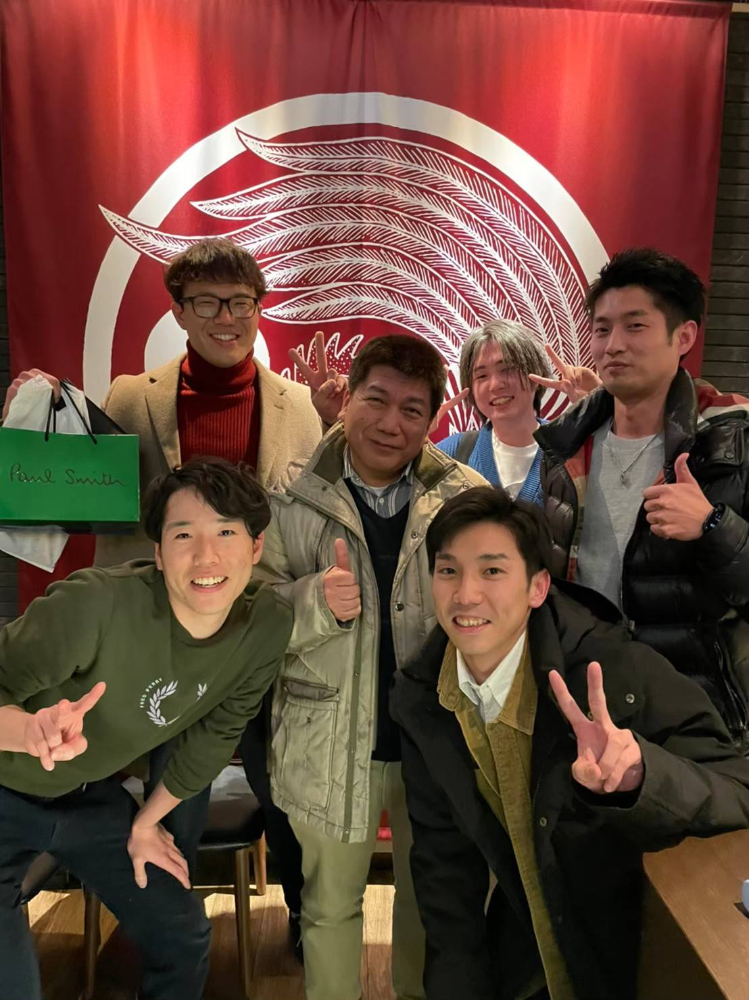
Front row: (From left) Mr. Maki, Mr. Adachi
Current Members
Professor Kenji TANAKA, Ph.D.
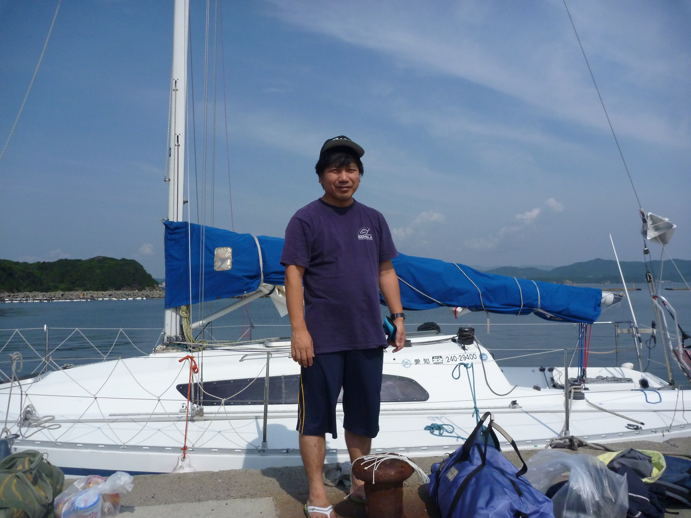
| Mar. 1988 | Graduated from the Department of Electrical Engineering, Faculty of Engineering, Kyushu University. |
| Mar. 1990 | Completed the Master's program at the Department of Energy Conversion Engineering, Interdisciplinary Graduate School of Engineering Sciences, Kyushu University. |
| Mar. 1993 | Completed the course requirements for the Doctoral program at the same graduate school and left before receiving the degree. |
| Apr. 1993 | Research Associate (Assistant Professor) at the National Institute for Fusion Science (NIFS). |
| Mar. 1995 | Received Ph.D. (Engineering) from Kyushu University. Doctoral Thesis: "Development of Laser Phase Method and Study of Electron Density Fluctuations in High-Temperature Plasmas Using the Method." |
| Jan. 2005 | Associate Professor at the National Institute for Fusion Science (NIFS). |
| Apr. 2009 | Concurrently appointed as Associate Professor of the Collaborative Course at the Department of Advanced Energy Engineering Science, Interdisciplinary Graduate School of Engineering Sciences, Kyushu University. |
| Jun. 2016 | Professor at the National Institute for Fusion Science (NIFS), National Institutes of Natural Sciences. |
Born in Yamaguchi Prefecture. My primary hobby is yachting. I own a 31-foot (9.5-meter total length) sailing cruiser and thoroughly enjoy yacht racing and coastal cruising. During my undergraduate years, I was an active member of the university's varsity yacht club. I also enjoy playing the classical guitar a little, though my favorite musical genres are hard rock and heavy metal. I am also fond of watching independent art-film cinema.
D1 JIN XIN
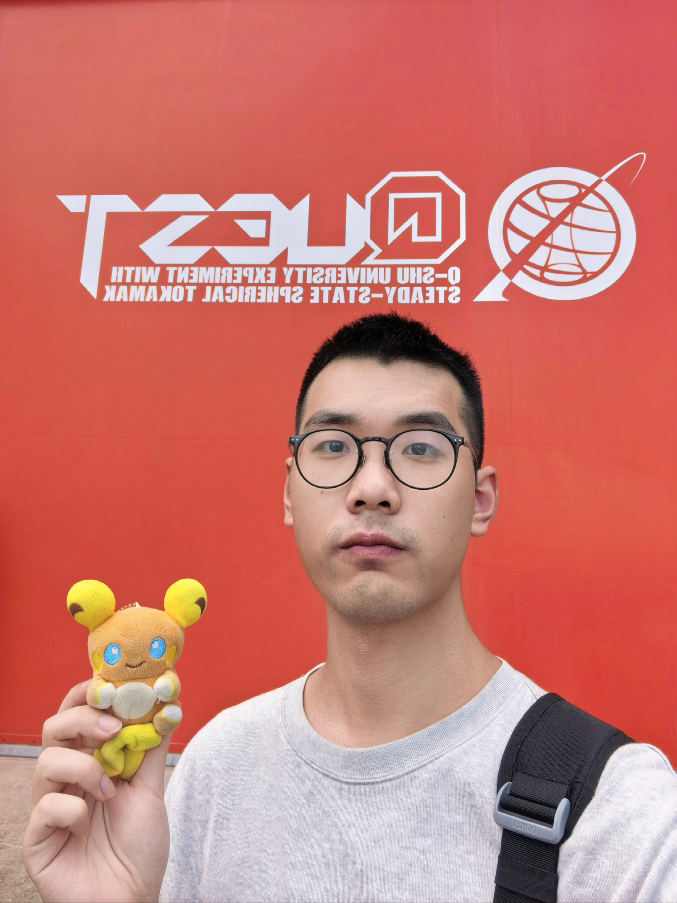
| Jul. 2021 | Graduated from the School of Physical Science and Technology, ShanghaiTech University. |
| Sep. 2021 | Enrolled in the Master's program at the School of Physical Science and Technology, ShanghaiTech University. |
| Aug. 2024 | Completed the Master's program at the same university. |
| Sep. 2024 | Research Assistant at the School of Physical Science and Technology, ShanghaiTech University (until Apr. 2025). |
| Jun. 2025 | Research Student at the Tanaka Laboratory, Interdisciplinary Graduate School of Engineering Sciences, Kyushu University. |
| Oct. 2025 | Enrolled in the Doctoral program at the Plasma and Quantum Engineering Major, Interdisciplinary Graduate School of Engineering Sciences, Kyushu University. |
Born in Shanghai. My hobbies are soccer and Pokemon. I enjoy building my own websites to showcase my hobbies. After coming to Japan, I started exploring how to cook Chinese food well. Driven by my curiosity about the secrets of Laser Produced Plasma, I came to NIFS.
M2 Hikaru OKUWADA
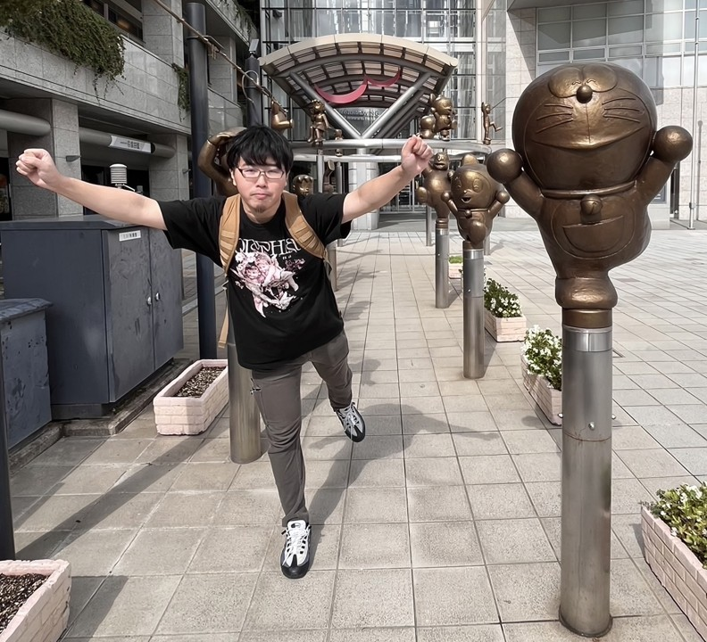
| Mar. 2025 | Completed the Advanced Course in System Creation Engineering at National Institute of Technology (KOSEN), Nara College. |
| Apr. 2025 | Enrolled in the Master's program at the Plasma and Quantum Engineering Major, Interdisciplinary Graduate School of Engineering Sciences, Kyushu University. |
Born in Nara Prefecture. My hobbies include watching martial arts matches, playing the acoustic guitar, and making authentic tacos. My dream is to visit Mexico one day to try real tacos in their birthplace. During my KOSEN years, I was a member of the Aikido club. Recently, my physical interest has shifted toward learning Brazilian Jiu-Jitsu.
M1 Koki SUMIDA
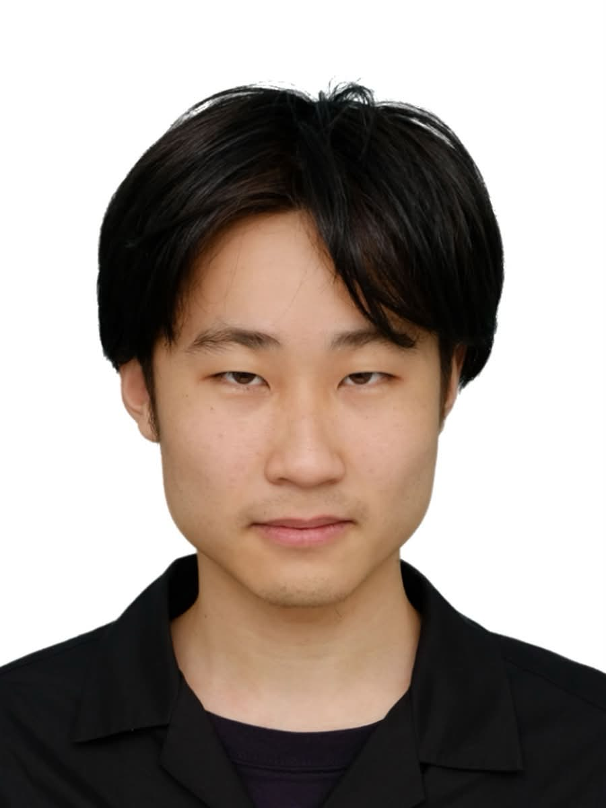
| Mar. 2026 | Graduated from the Department of Information and Electrical Engineering, School of Engineering, Kumamoto University. |
| Apr. 2026 | Enrolled in the Master's program at the Plasma and Quantum Engineering Major, Interdisciplinary Graduate School of Engineering Sciences, Kyushu University. |
Born in Yamaguchi Prefecture. My hobby is home cooking; recently, I have been putting a lot of effort into sharpening my culinary skills and challenging myself with various unique recipes. Throughout junior high and high school, I played varsity Kendo and Handball, and the stamina and proactiveness I built back then are still going strong. I strongly feel that meticulous planning and coordination ("Dandori") are essential secrets for both successful research and good cooking.
Alumni & Collaborators
Alumnus / Collaborator: Toshiki KINOSHITA, Ph.D.
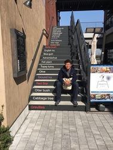
| Mar. 2018 | Completed the Advanced Course in Mechanical and Control Engineering at National Institute of Technology (KOSEN), Nara College. |
| Apr. 2018 | Enrolled in the Master's program at the Department of Advanced Energy Engineering Science, Kyushu University. |
| Mar. 2020 | Completed the Master's program at the same graduate school. |
| Apr. 2020 | Enrolled in the Doctoral program at the Department of Advanced Energy Engineering Science, Kyushu University. |
| Mar. 2023 | Completed the Doctoral program at the same graduate school and received Ph.D. (Engineering). Doctoral Thesis: "Development of Laser Diagnostics for Electron Density and Electron Density Fluctuation Measurements and Hydrogen Isotope Effects on Fluctuations and Heat and Particle Transport in Magnetically Confined High-Temperature Plasmas." |
| Apr. 2023 | Assistant Professor at the Research Institute for Applied Mechanics (RIAM), Kyushu University. |
Born in Osaka Prefecture. A prominent, high-caliber researcher boasting an extraordinary amount of physical stamina. In his final doctoral year (FY2022), despite facing intense experimental bottlenecks, he successfully synthesized and completed a stellar doctoral thesis. He continues to apply his natural stamina to unlock the remaining secrets of plasma physics. Awarded the JSPS Research Fellowship DC2.
Current Affiliation: Visit the official website of the Ido Laboratory at Kyushu University here.
Alumnus / Collaborator: Hikona SAKAI, Ph.D.
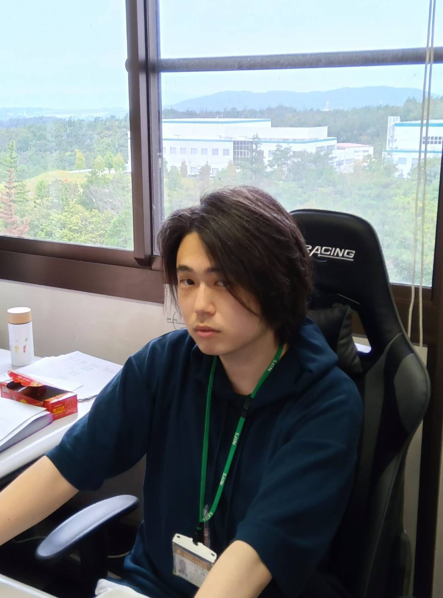
| Mar. 2020 | Graduated from the Department of Electrical and Electronic Engineering, College of Engineering, Ibaraki University. |
| Apr. 2020 | Enrolled in the Master's program at the Department of Advanced Energy Engineering Science, Kyushu University. |
| Mar. 2022 | Completed the Master's program at the same graduate school. |
| Apr. 2022 | Enrolled in the Doctoral program at the Plasma and Quantum Engineering Major, Interdisciplinary Graduate School of Engineering Sciences, Kyushu University. |
| Mar. 2025 | Completed the Doctoral program at the same graduate school and received Ph.D. (Engineering). Doctoral Thesis: "Development of Electron Density Fluctuation Diagnostic Techniques Using Infrared and Far-Infrared Lasers and Their Application to Transport Studies in Magnetically Confined High-Temperature Plasmas." |
| Apr. 2025 | Project Researcher / Term-appointed Staff at Naka Fusion Institute, National Institutes for Quantum Science and Technology (QST). |
Born in Fukuoka Prefecture. Hikona Sakai was once a regular young man, merely coasting through an ordinary, peaceful daily routine. However, after stepping across a threshold into advanced sciences one fateful day, his reality transformed into an unimaginable, cinematic journey. Bound by the powerful orbit of "Nuclear Fusion," he faced a succession of grand scientific challenges and destinies. Five years after dedicating his path toward the dream of a Doctoral degree, what thoughts cross his mind as he looks back at the countless encounters and farewells? Stay tuned for the next epic, high-stakes cinematic blockbuster of Dr. Sakai's life! Awarded the NIFS Research Fellowship.
Alumnus: Shota TAKESHIDA
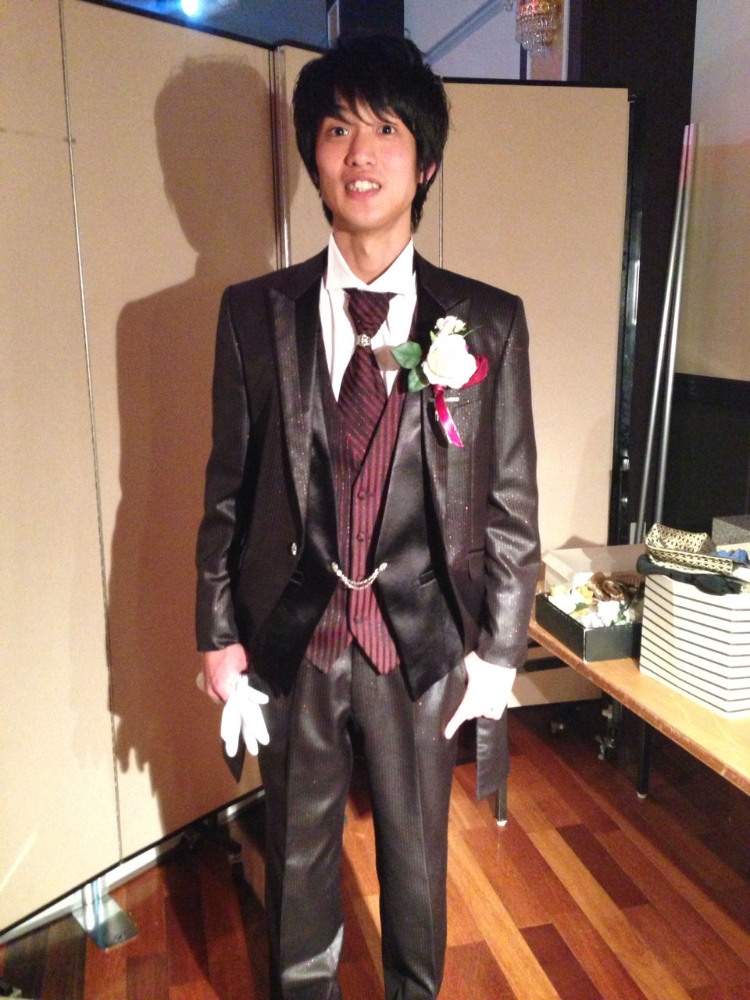
| Mar. 2015 | Graduated from the Department of Mechanical Systems Engineering, Faculty of Engineering, Miyazaki University. |
| Apr. 2015 | Enrolled in the Master's program at the Department of Advanced Energy Engineering Science, Kyushu University. |
| Mar. 2017 | Completed the Master's program at the same graduate school. |
Born in Fukuoka Prefecture. My hobbies include driving, playing in a music band, and enjoying social drinking. During my undergraduate years, I belonged to the light music club and won a university-wide band competition. A genuine car enthusiast, I spent my college years working part-time at a gas station just to wash cars meticulously. I also have unique experience working as a formal attire model for bridal fashion shows. Currently, I often spend my weekends relaxing, listening to music, and enjoying drinks in the city of Nagoya.
Alumnus: Takumi MAKI
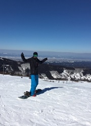
| Mar. 2017 | Graduated from the Department of Electrical and Electronic Engineering, Faculty of Engineering, University of Toyama. |
| Apr. 2017 | Enrolled in the Master's program at the Department of Advanced Energy Engineering Science, Kyushu University. |
| Mar. 2019 | Completed the Master's program at the same graduate school. |
Born in Toyama Prefecture. My hobbies are snowboarding and motorcycle touring. During my KOSEN (early undergraduate) years, I was a member of the baseball club. In my university years, I completely immersed myself in snowboarding, hitting the slopes 20 to 30 times a season. I love motorcycles and saved up money from a specialized part-time job to buy my own bike. I still spend my weekends actively outdoors.
Alumnus: Shun ADACHI
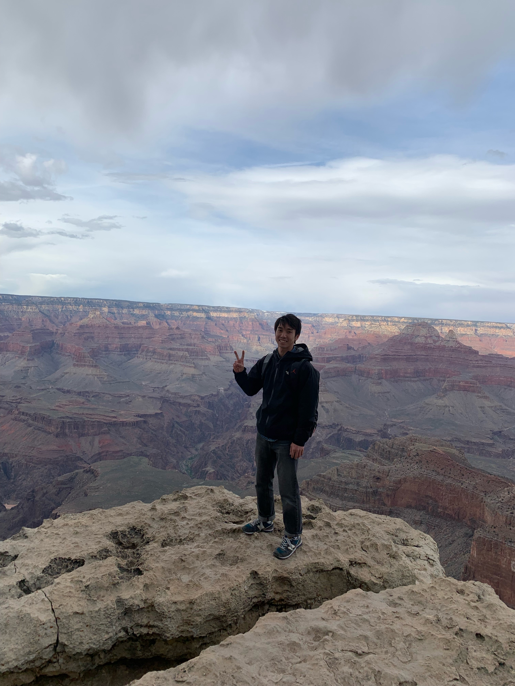
At the Grand Canyon
| Mar. 2019 | Graduated from the Department of Mechanical Engineering, Faculty of Engineering, Ehime University. |
| Apr. 2019 | Enrolled in the Master's program at the Department of Advanced Energy Engineering Science, Kyushu University. |
| Mar. 2021 | Completed the Master's program at the same graduate school. |
Born in Hiroshima Prefecture. My hobbies include baseball, road biking, and camping. During my university years, I dedicated the vast majority of my time to playing competitive hard-ball baseball. In graduate school, playing catch with lab members during research breaks and playing volleyball with the NIFS staff were my absolute favorite ways to unwind.
Alumnus: Koshi YOKOMIZO
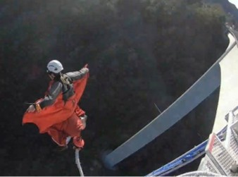
| Mar. 2023 | Graduated from the Department of Electrical Engineering, Faculty of Engineering, Fukuoka University. |
| Apr. 2023 | Enrolled in the Master's program at the Plasma and Quantum Engineering Major, Interdisciplinary Graduate School of Engineering Sciences, Kyushu University. |
| Mar. 2025 | Completed the Master's program at the same graduate school. |
Born in Fukuoka Prefecture. He boldly challenged the Gifu Bungee jump—the highest in Japan at 215 meters—but was initially overcome by fear and couldn't take the dive on his first attempt. Fuelled by regret, he returned for a second challenge and successfully executed a flawless dive. Having proven his courage to himself, his next leap is into the rough waves of professional society. Since he successfully conquered a 215-meter plunge, there is absolutely nothing left to fear.
Alumnus: Naoya YOSHIHARA
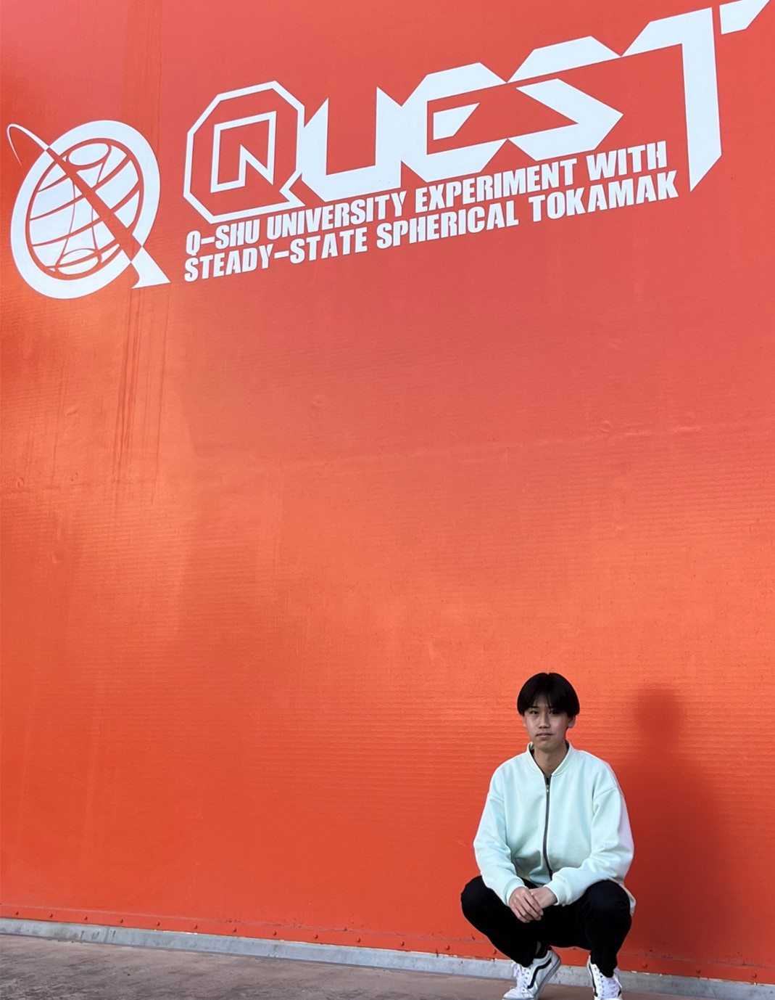
| Mar. 2024 | Graduated from the Department of Engineering, School of Science and Technology, Oita University. |
| Apr. 2024 | Enrolled in the Master's program at the Plasma and Quantum Engineering Major, Interdisciplinary Graduate School of Engineering Sciences, Kyushu University. |
| Mar. 2026 | Completed the Master's program at the same graduate school. |
Born in Hyogo Prefecture. My hobbies include exploring tourist spots, eating my way through different cities, and staying physically active. Ever since taking a trip to France for graduation, I have developed a strong interest in international travel. My current driving force in life is eating large amounts of delicious food, and my ultimate dream is apparently to indulge in a massive feast and slip into a glorious, peaceful food coma.